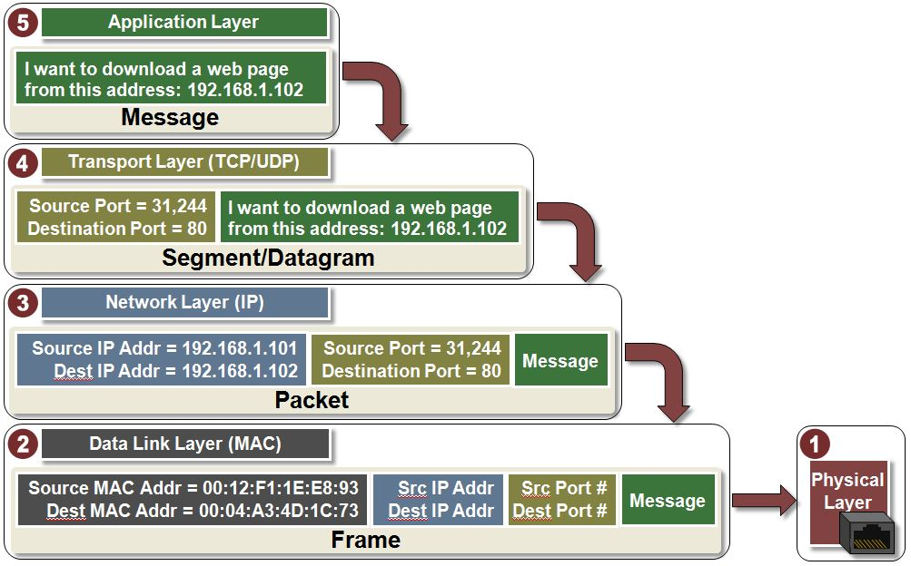
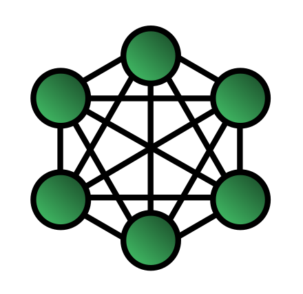
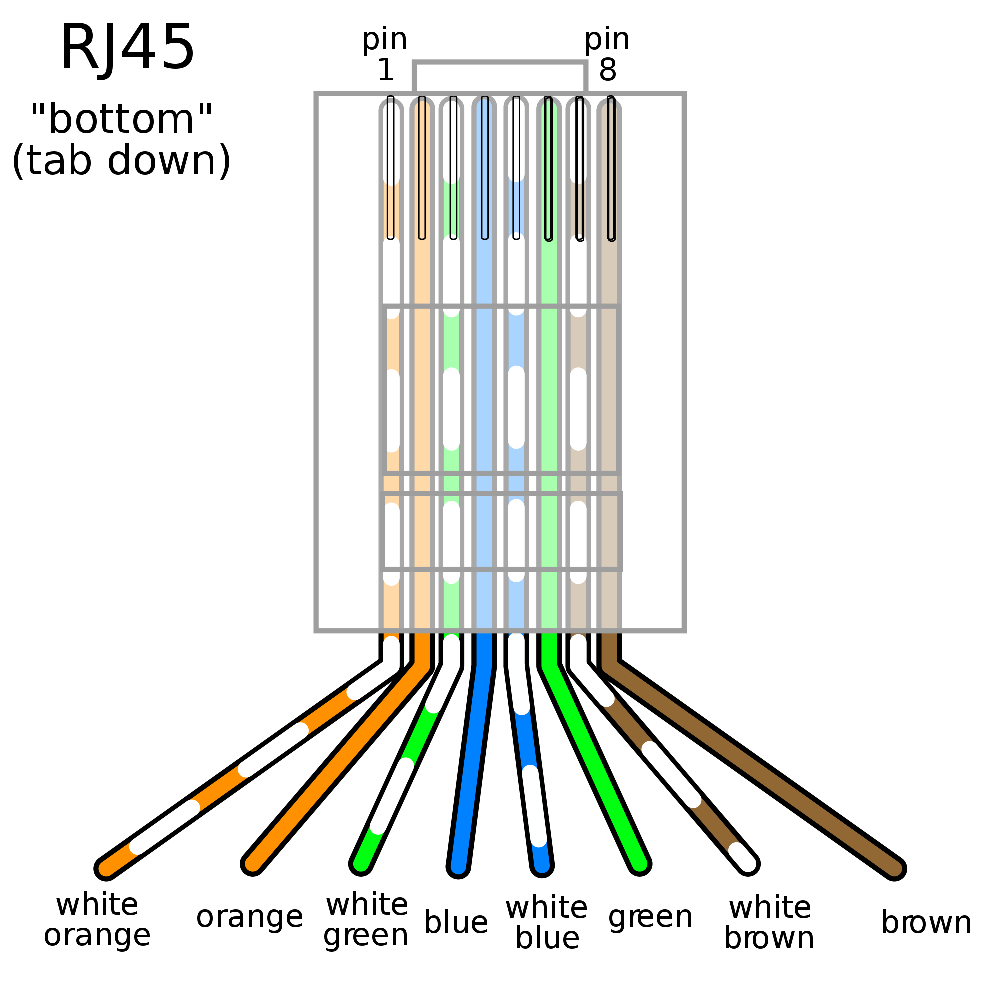
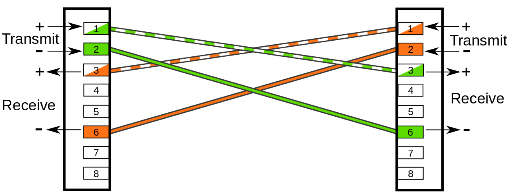
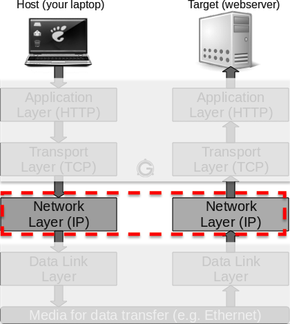
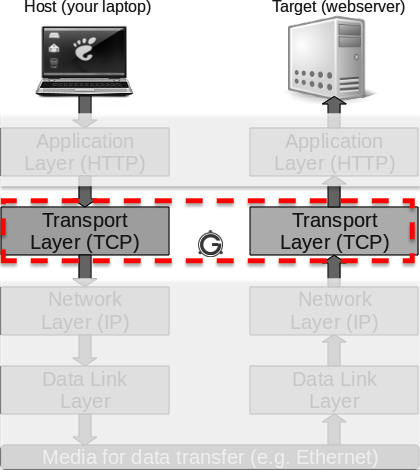
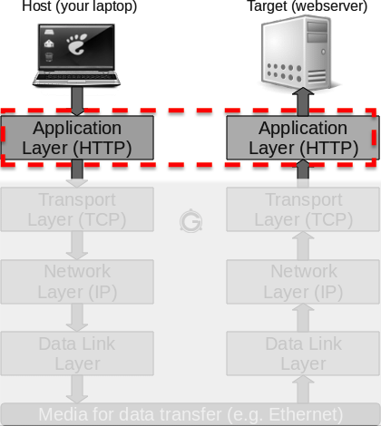

$ ls
Dockerfile README.adoc dist gulp scripts
Makefile assets docker-compose.yml package.json slidesIntroduction au Réseau
Institut Saint Laurent - 2018
Présentation disponible à l’URL https://dduportal.github.io/isl-reseau-2018/
Comment utiliser cette présentation ?
Pour naviguer, utilisez les flèches en bas à droite (ou celles de votre clavier)
Gauche/Droite: changer de chapitre
Haut/Bas: naviguer dans un chapitre
Pour avoir une vue globale : utiliser la touche "o" (pour "Overview")
Pour voir les notes de l’auteur : utilisez la touche "s" (pour "Speaker notes")
Whoami
Damien DUPORTAL:
Træfik's Developer Advocate @ Containous et Freelancer
Former Training Engineer @ CloudBees

Containous
We Believe in Open Source
We Deliver Træfik
Commercial Support for Træfik
12 people, 90% technical experts
Introduction au Binaire
Il y a 10 types de personnes :
Ceux qui comprennent le binaire,
Les autres.
Système Décimal
Concept: un chiffre prends une des valeurs suivantes:
0
1
2
..
9
Combien de valeurs ? 10
Décimal : "Base 10"
| 1 chiffre | 2 chiffres | 3 chiffres |
|---|---|---|
0 | 10 | 100 |
1 | 11 | 101 |
2 | 12 | 102 |
etc. |
Système Binaire
Utilisé en Chine 1 siècle avant J.C.
Concept: Un chiffre ne peut prendre que 2 valeurs: 0 ou 1
Décimal : "Base 2"
| 1 chiffre | 2 digits | 3 digits |
|---|---|---|
0 | 10 | 100 |
1 | 11 | 101 |
- | 11 | 110 |
- | - | 111 |
etc. |
Décomposition en Puissances
Décimal :
125 = 100 + 20 + 5 = ( 1 x 102 ) + ( 2 x 101 ) + ( 5 x 100 )
Binaire :
111 = 100 + 10 + 1 = ( 1 x 22 ) + ( 1 x 21 ) + ( 1 x 20 )
Octet / Bits / Digit ?
Digit : C’est un chiffre, quelque soit la base (10, 2, 16, etc.)
Bit : C’est un chiffre en base 2
Octet : Codage d’une information sur 8 bits
Octet
Unité du Système International
Incluant des unité de grandeur: kilo (Ko), mega (Mo), giga, téra, péta, exa, zetta, yotta…
Attention: grandeur par 1000
Unité "binaire" (multiples faciles)
Unité de grandeur alternative: kibi (Kio), mébi (Mio)…
Attention: grandeur par 1024
Système Hexadécimal
Base 16: 0, 1,… 9, A, B, .. F
Compromis simplicité / écriture compacte
Pratique en informatique: codé sur 4 bits
Exercices
Couleurs en CSS : Combien de couleurs possibles,
avec le format
#aaaaaa(6 caractères hexadécimaux) ?avec le formt RVB(255,255,255) (3 octets) ?
Conclusion ?
Introduction à la Ligne de commande Linux
Linux
Conventions
Le charactère "dollar"
$en début de ligne indique une invitation de commandeSon absence indique le résultat de la commande executée dans l’invitation
Commande
C’est le « verbe » expirmant l’intention de la commande
Example:
lspour "Lister" le contenu d’un répertoire :
Arguments
C’est le "compléments d’objet" permettant de désigner la cible de l’intention
Example: "Lister" le contenu du répertoire
/usr:
$ ls /usr
bin include lib libexec local sbin share standaloneOptions
Ce sont des « adverbes » pour nuancer l’intention
Example: Lister le contenu du répertoire courant, en affichant 1 élément par ligne avec les détails:
$ ls -l
total 40
-rw-r--r--@ 1 dadou staff 564 Oct 15 15:16 Dockerfile
-rw-r--r--@ 1 dadou staff 1320 Oct 15 15:12 Makefile
-rw-r--r--@ 1 dadou staff 1567 Oct 15 15:12 README.adoc
drwxr-xr-x@ 4 dadou staff 128 Oct 15 15:05 assets
drwxr-xr-x 8 dadou staff 256 Nov 5 13:25 dist
-rw-r--r--@ 1 dadou staff 661 Oct 15 15:12 docker-compose.yml
drwxr-xr-x@ 4 dadou staff 128 Oct 15 15:05 gulp
-rw-r--r--@ 1 dadou staff 778 Oct 15 15:11 package.json
drwxr-xr-x@ 3 dadou staff 96 Oct 15 15:05 scripts
drwxr-xr-x@ 6 dadou staff 192 Nov 4 12:00 slidesKit de survie
Supercommandes: CTRL + * :
Ctrl+C: Interrompre la commande en cours
Ctrl+A / Ctrl+E: Naviguer au début / à la fin de la ligne en cours
Ctrl+D: Equivalent des commandes
exitoulogoutCtrl+R: Rechercher dans l’historique des commandes
man CMDpour le "manuel" d’une commande. Example:man ls.Si les "manuels" ne sont pas installés : Google !
Exercice avec ls
Système de fichier
Arbre :
Racine (
/)Branches (dossiers)
feuilles (fichiers)
Parcours du système de fichier
"/" comme racine, et aussi "/" comme separateur
Exemples :
/: "racine" du disque/usr: Dossierusrà la racine du disque/home/scrapbook: Sous-dossierscrapbookdans le dossierhomeà la racine
Quelques commandes utiles
Changer de répertoire courant:
cdAfficher le répertoire courant:
pwdCréer un fichier:
touchCréer un répertoire:
mkdirCopier un fichier ou répertoire:
cpDéplacer un fichier ou répertoire:
mvSupprimer un fichier ou répertoire:
rm
Exercice avec le système de fichier
Utilisateurs
obligatoire; rien d’anonyme !
Superutilisateur
root
Groupe
Annuaire d’Utilisateurs
Liste dans /etc/passwd Groupes dans /etc/group
Utilisateurs et système de fichiers
Droits sur les fichiers : owner, group, others.
Codage des droits sur le système de fichiers
Binaire
Decimal
Codé
Exercices droits sur le système de fichiers
Ls -l en exemple
chmod et chgrp
Introduction au Réseau
Quel est le problème ?
On souhaite transmettre de l’information entre 2 acteurs éloignés.
Solution simple : Les Sémaphores
Limites des Sémaphores
Information trop simple: allumé ou éteint
Logistique nécessaire:
Il faut se mettre d’accord au préalable
Fragilité du "réseau"
Quid de la confidentialité ?
Meilleure solution: Signaux de fumée

source: http://www.leplacide.com
Signaux de fumée: principes
Encodage de l’information dans un dictionnaire
On doit partager ce dictionnaire
Possibilité de chiffrer les messages
Meilleure quantité d’information portée
Limites des signaux de fumée

source: Lucky Luke: Les Collines Noires
Meilleure solution : Le Courrier
Plus grande quantité d’information
Meilleure confidentialité
Meilleur routage
Limites du courrier
Routage
Un peu d’histoire…
Télégraphe Optique
"Super Sémaphore"
Télégraphe Electrique
26 Lettres: 26 fils ?
Problématiques du Réseau
Routage de l’information
Quantité d’information à transmettre
Intégrité de l’information
Protocole d’échange
Problématiques: Routage
Source
Destination
Chemin
Problématiques: Quantité
Découper
Compresser
Problématiques: Intégrité
Diluer
Dupliquer
Chiffrer
Problématiques: Protocoles
Quel language ?
Quel propriétées ?
Quand commencer, et finir ?
Modèle OSI
Il en tient un couche ce modèle !
Descartes ?

Descartes
Découper un gros problème en sous-problèmes
"Esprit Cartésien"
Faire une seule chose, mais bien la faire
Le modèle "OSI"
OSI = "Open Systems Interconnection"
Modèle standard International (ISO-7498)
Modèle initial sur fond de combats industriels dans les années 1970s
OSI Facile

OSI: Commutation de paquets
But: Transfert d’information dans des paquets

Packet Data Unit (PDU)
Modèle "Internet Protocol" (TCP-IP)
Problèmatiques du modèle OSI
Modèle poussé par des industriels
Intérêts
Pérennité
Très complet, mais trop complexe
Bienvenue au modèle "Internet Protocol"
Inventé par Vinton G. Cerf et Bob Kahn
Issu de la recherche universitaire, puis militaire
Utilisé sur ARPANet en 1983
Simplifions OSI !
TCP/IP : les 4 couches
Couche Applicative:
Communications de haut niveau
Couche Transport:
Garantie des niveaux de service
Couche "Internet Protocol":
Gestion des adresses
Couche "Liaison de données":
Gestion de la voie physique
TCP/IP : Communication point à point
TCP/IP : Commutation de paquet

Couche "Liaison de Données"
Modèle "Internet Protocole"
Où sommes nous ?

Buts de la couche "Liaison de Données"
Contrôler la transmission de la donnée via la couche physique
Par abus de language: on intègre la couche physique ici
Donc liaison physique + carte associée + pilotes logiciels
Exemples
Ethernet
Wifi
Bluetooth
Cable Coaxial
Fibre Optique
NFC
Topologie
Branche des mathématiques qui étudie la géométrie de situation, les propriétés de l’espace.
Type de Topologies
Topologies Physiques : Palpables
Topologies Logiques : Virtuelles
Topologie Linéaire
Topologie Linéaire
La plus simple
Très fragile
Temps de parcours dépendant de la distance
Ajout facile
suppression avec coupure
Topologie en Anneau
Topologie en Anneau
Modèle du "paquet de chips autour du feu de camp"
Moins fragile: Duplication des chemins
Temps de parcours dépendant de la distance
Ajout moyennement couteux
suppression moyennement couteuse
Topologie en Etoile
Topologie en Etoile
Modèle du "chef scout au feu de camp".
Fragilité limité à la coupure, pas d’impact sur le reste.
Mais Centralisation
Temps de parcours constant
Ajout facile
suppression facile
Topologie en Bus
Topologie en Bus
Variation de l’étoile, mais sans élément central
Temps de parcours constant
Ajout et suppression facile
Topologie en Arbre
Topologie en Arbre
Interconnexion de topologie en étoiles entre elles
Fragile
Ajout facile, suppression moyennemenet complexe
Parcours constant et facile
Topologie en Maillage

Topologie en Maillage
Temps de parcours constant
Ajout et suppression complexes
Très solide
Topologie Hybride
Internet: "Inter-network" : Interconnexion de réseaux avec différents topologies
Ethernet
Un exemple d’implémentation de
la couche "Liaison de Données + Physique"
"Ether"
Milieu hypothétique des substances subtiles distinctes de la matière et permettant de fournir ou transmettre des effets entre les corps censé baigner l’Univers.
— Scientifique Anonyme, 1789
Ethernet : Kezako ?
Ethernet est :
Une mécanisme de connexion physique, à transmission électrique
Un protocole de réseau local à "commutation de paquets"
Une norme internationale : ISO/IEC 8802-3
Ethernet : Connexion physique à transmission électrique
Ethernet : RJ45
Ethernet : câblage

Ethernet : fonctionnement de base

Ethernet : Comment connecter plusieurs équipements ?
Problème : Comment faire dialoguer 3+ ordinateurs via Ethernet ?
Ethernet : Concentrateur
Solution : Concentrateur ("Hub") Ethernet.
Ethernet + Concentrateur : Protocole "Feu de Camp"
Ethernet : Commutateur
Ethernet + Commutateur : Protocole "Arbitre"
Ethernet : Câbles droits pour Commutateur
Ethernet : Résumé sur les câbles
Réseau Locaux / Globaux
Interface Réseau
Adresse MAC
Exercices Adresses MAC
Couche "Internet"
Modèle "Internet Protocole"
Où sommes nous ?

Buts de la couche "Internet"
Gestion des adresses
Gestion du routage
Adresse IP
Masques
Classes d’adresses IP
Broadcast / Unicast
Exercices de calculs de masques
Lien IP / MAC
Exercices avec ARP
Rappel Modèle Couches
Rappel Topologies
Sous réseaux
Passerelle
Routeur
Routage
Table de routage
Exercice avec la table de routage
Translation d’adresse réseau
Protocole ICMP
Ping: un outil se basant sur ICMP
Exercie avec Ping
Exercice avec nmap
Couche "Transport"
Modèle "Internet Protocole"
Où sommes nous ?

Buts de la couche "Transport"
Garantie des niveaux de service de la communication
Gestion du niveau d’intégrité des données transmises
Gestion des performances et des états
TCP
UDP
Ports
Translation de port réseau
Rappel Router
Exercice avec nmap
Couche "Application"
Modèle "Internet Protocole"
Où sommes nous ?

Buts de la couche "Application"
C’est ici que se passe votre travail
Communications de haut niveau entre des processus distants
Plein de protocoles connus se trouvent ici: HTTP, SSH, FTP, P2P, etc.